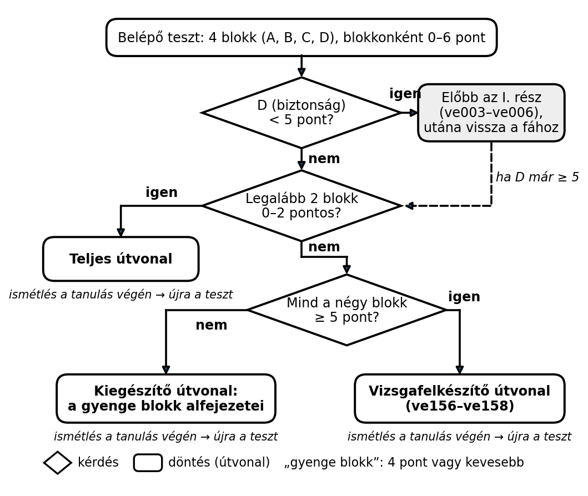
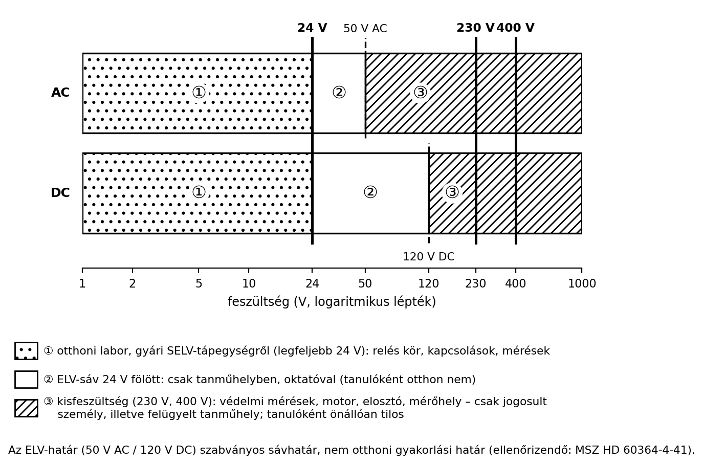

Képzeld el, hogy megérkezel egy épülő társasházba. A művezető kezedbe ad egy villamos kivitelezési tervet, és azt mondja, hogy a folyosóról indulva ma kell bekötnöd egy lakáselosztót, három világítási áramkört és a főelosztó mérőhelyi csatlakozását. A terv tele van rajzjelekkel, az elosztó kapcsolási rajzán kismegszakító-, áram-védőkapcsoló- és túlfeszültségvédelmi jelek szerepelnek, a vezetéktípusok pedig harmonizált jelöléssel vannak megadva.
Ahhoz, hogy ez ne egymástól független, összefüggéstelen feladatok halmazának tűnjön, hanem egyetlen szakmai logika mentén végigvihető munkának, pontosan tudnod kell, hogy az egyes ismeretek hová illeszkednek. Ez az alfejezet ezt a térképet adja: megmutatja, mit vár el a szakma, és hogy a könyv egyes részei miként fedik le a képzési követelményeket.
Definíció. A villanyszerelő a kisfeszültségű villamos berendezések szerelésére, javítására, ellenőrzésére és üzembe helyezésére felkészített szakember. A magyar képzési rendszerben a villanyszerelő szakma a 34 522 04 azonosítószámú szakképesítéssel, majd annak jogutódjával szerezhető meg; a pontos, jelenleg hatályos azonosítót és követelményeket a mindenkori képzési jogszabály tartalmazza (ellenőrizendő: aktuális szakképesítési besorolás és elnevezés).
A gyakorlatban a villanyszerelő két nagy területen dolgozik, amelyek a könyv felépítését is meghatározzák:
A villanyszerelő nem tervezi meg szabadon a teljes épületvillamos hálózatot, nem készít engedélyes villamos terveket, nem végez nagyfeszültségű hálózati munkát, és nem jogosult hálózati engedélyesi feladatok ellátására. A tervezést a tervező, a hálózati beavatkozást a hálózati engedélyes végzi; a szerelő a kivitelezés, ellenőrzés, javítás és karbantartás szakembere. Természetesen a villanyszerelőnek ismernie kell a terveket, a szabványokat és a vonatkozó előírásokat, mert ezek nélkül nem tud biztonságos és szabványos munkát végezni.
Hogy a végzettség után milyen munkakörök, jogosultságok és továbbképzések épülnek egymásra (pályaív), azt a Munkaviszony, álláskeresés és munkajog alapjai alfejezet (43.1) mutatja meg.
A villanyszerelő képzés tantárgyait hagyományosan három csoportra osztják:
Az alábbi táblázat a könyv tíz részéhez rendeli hozzá a tipikus tantárgyi tartalmakat, és megmutatja, hogy az adott rész miért fontos a vizsgán és a munkahelyen.
| Könyvfejezet | Tipikus tantárgyi tartalom | Vizsga/gyakorlat jelentősége |
|---|---|---|
| I. rész: Útmutató és munkabiztonság | Munkavédelem, biztonságtechnika, elsősegély, jogi keretek | Biztonsági szabályok ismerete nélkül sem gyakorlat, sem elmélet nem teljesíthető |
| II. rész: Elektrotechnika alapjai | Elektrotechnika, méréstechnika | A számolási feladatok alapja; Ohm-törvény, háromfázisú rendszer, mérések |
| III. rész: Anyagok, műszaki rajz, dokumentáció | Anyagismeret, műszaki rajz, műszaki dokumentáció | Rajzolvasás, vezeték- és kábelismeret, dokumentáció készítése |
| IV. rész: Épületvillamosság | Épületvillamosság, szerelési gyakorlat, világítástechnika | Lakáselosztó, szerelvények, világítási áramkörök, túláramvédelem |
| V. rész: Hibavédelem, földelés, ellenőrzés | Érintés- és hibavédelem, villámvédelem, szabványossági vizsgálat | Védelmi mérések, jegyzőkönyv, FI-, hurokimpedancia-mérés |
| VI. rész: Villamos gépek | Villamos gépek, transzformátorok, motorok | Motorok bekötése, adattábla, indítási módok, hibakeresés |
| VII. rész: Kapcsoló- és vezérlőkészülékek, ipari elosztók | Készülékismeret, motorvezérlés, kapcsolóberendezések | Mágneskapcsolós vezérlések, direkt- és csillag–delta indítás, elosztószekrény |
| VIII. rész: Ipari elektronika | Elektronikai alapok | Érzékelők, tápegységek, félvezetők az ipari környezetben |
| IX. rész: Gyakorlati útmutatók | Szakmai gyakorlat, mérési gyakorlat | Tanműhelyi és vizsgafeladatok lépésről lépésre |
| X. rész: Szakma, vállalkozás, vizsga | Vállalkozási ismeretek, vizsgafelkészítés | Árajánlat, munkajog, szakmai ismeretek rendszerezése |
Ezt a megfeleltetést a továbbiakban kompetenciatérképnek nevezzük. Nem cél, hogy a könyv szövegét betű szerint megtanuld, hanem hogy az egyes fejezeteket a képzés követelményeihez tudd kötni, és a vizsgán megtaláld a választ.
A táblázat azt mutatja, mit fed le egy-egy rész; azt viszont nem, hogy milyen sorrendben érdemes haladni. Az alábbi térkép azt mutatja, melyik rész melyikre épül: a nyíl hegyénél álló részhez a nyíl tövénél álló rész ismerete kell. A doboz mintázata a tantárgycsoportot jelöli (sraffozott: elektrotechnikai alapok, üres: szakmai ismeretek, pöttyözött: gyakorlati ismeretek).
Olvasd a térképet felülről lefelé. Az I. rész (munkabiztonság) minden más rész előfeltétele, a X. rész (vizsgafelkészülés) pedig mindegyikre épül – ezt a két széles sáv jelzi. A II. rész elektrotechnikai alapjaira épül a III., IV., V., VI. és VIII. rész. A III. rész rajzi és anyagismereti fejezetei és a IV. rész épületvillamossága között szaggatott nyíl áll: a kettő párhuzamosan is tanulható, mert sok rajzjelet éppen a konkrét szerelési rajzokon értesz meg. A gépek (VI.) és a kapcsoló- és vezérlőkészülékek (VII.) csak a hibavédelem (V.) után következnek, mert a motorvédelem és a kapcsolóberendezések arra épülnek; a gyakorlati útmutatók (IX.) a IV., V. és VII. részt kötik össze. A HTML-kiadásban egy részre kattintva kiemelődnek az előfeltételei (piros) és a rá épülő részek (kék), alatta pedig a rész alfejezeteinek listája jelenik meg linkkel.
Minden alfejezet az alábbi – szándékosan ismétlődő – szerkezetben épül fel, hogy önálló tanulásnál is kiszámítható legyen az út:
Ezt a szerkezetet nevezzük a könyv tanulási szerződésének: ha egy alfejezetben végigjárod ezt a tizenkét lépést, akkor a képzés adott témáját nemcsak megérted, hanem a vizsgán és a munkahelyen is használható formában sajátítod el.
Szabály. A tanulási szerződés nem azért van, hogy a könyvet egyhangúvá tegye, hanem hogy a tanuló mindig tudja, mi a következő lépés, és a tanulást be tudja illeszteni a napi rutinjába. Ha kevés időd van, az önellenőrzés és a rövid összefoglaló mindig a leggyorsabb visszajelzést adja arról, hogy elég mély-e a tudásod.
A könyvben minden alfejezet azonos kiemeléseket használ, hogy a keresés és a tanulás gyors legyen:
A mennyiségek betűjeleit és a mértékegységeket a könyv a hazai és európai gyakorlatnak megfelelően jelöli. A feszültség jele , az áramé , az ellenállásé , a teljesítményé , a hatásfoké , a frekvenciáé , a fázisszögé , az impedanciáé , a fajlagos ellenállásé . A hálózati feszültség 230/400 V, 50 Hz. A vezetékek jelölése L1, L2, L3, N, PE, a motorok kapcsai U1, V1, W1, a mágneskapcsoló tekercsé A1/A2, a hőkioldó érintkezőié 95/96. A vezető- és kapocsjelölések az MSZ EN 60445, a készülék-betűjelek az MSZ EN IEC 81346-2, a rajzjelek az MSZ EN 60617 szabványt követik (ellenőrizendő: aktuális kiadások).
Továbbvitt eredmény. A kiemelések jelentése és a tanulási szerződés szerkezete minden későbbi alfejezetben alkalmazásra kerül; a szabványok, a rajzjelek és a mértékegység-konvenciók az Elektrotechnika alapjai, az Anyagok, műszaki rajz és dokumentáció és a Hibavédelem, földelés, villámvédelem és ellenőrzés rész alfejezeteiben válnak napi használatúvá.
A könyv önálló tanulásra is készült, de akkor működik a legjobban, ha a tanulási munka aktív. Az alábbi módszert érdemes követni:
Ne csak olvasd, hanem számolj. Minden képletet legalább egyszer magad számolj végig. Ha a könyv egy feladatot kidolgoz, te előbb takard le a megoldást, és próbáld meg önállóan elvégezni.
Készíts magadnak képletgyűjteményt. A füzetbe írd ki a kiemelt összefüggéseket, a mértékegységet és a feltételeket. A vizsga előtti napon már csak ezt kell átismételned. A saját gyűjteményedet hasonlítsd össze a Képlet- és jelölésgyűjtemény függelékkel: ami nálad hiányzik, azt még nem értetted meg vagy nem jegyezted fel.
A rajz–valóság–mérés hármast mindig együtt értelmezd. Ha egy kapcsolási rajzot látsz, képzeld el, hogyan húznád be a vezetéket a kapcsolószekrénybe, és mit mérnél a kapcsokon. Ne csak a rajz jeleit keresd.
Az alábbi tabló ezt a hármast mutatja a legegyszerűbb példán, egy egypólusú kapcsolású lámpakörön. Az első oszlop az áramúti rajz (L1 → F1 → S1 → E1 → N, a PE a lámpatest védőkapcsára fut); a második ugyanezt a valóságban, a falon mutatja: az elosztóból 3 ér (L, N, PE) megy az X1 kötődobozba, onnan 2 ér a kapcsolóhoz (a fázis és a „visszatérő” kapcsolt fázis) és 3 ér a lámpához; a kötések az X1 dobozban vannak. A harmadik oszlop a mérés: feszültségmentes állapotban (az öt szabály után) a folytonosság S1 BE állásban ≈ 0 Ω, KI állásban ∞, a PE-folytonosság kis érték; a 230 V-os működési próba csak felügyelettel végezhető. A három oszlopot ugyanazok a betűjelek (F1, S1, E1, X1) kötik össze – ez a könyv minden későbbi rajzának olvasási kulcsa.
Próbáld ki: takard le a második oszlopot, és a rajzból mondd meg, hány ér fut a kapcsolóhoz és miért. A lámpakör részletes tárgyalása a Világítási áramkörök: egypólusú, soros, váltó és kereszt alfejezetben következik.
A gyakorlati útmutatókat biztonságos környezetben, ne éles hálózaton próbáld ki. A törpefeszültségű tanlapon vagy a tanműhelyben gyakorolj; a hálózati feszültségen mindig oktató vagy jogosult személy felügyelete alatt.
Az önellenőrzést mindig legalább egyszer végezd el. Ha valamelyik válasz nem megy, az nem kudarc, hanem jelzés: azt a részt újra kell olvasnod, mielőtt továbblépnél.
A tipikus hibákat ne ugord át. A hiba elemzése sokszor jobban rögzíti a helyes megoldást, mint a hibátlan példa elolvasása.
Figyelem. A könyv nem helyettesíti a szabványokat, a gyártói adatlapokat vagy a hatályos jogszabályokat. A képzés, a vizsga és a munkahelyi ellenőrzés során mindig a mindenkori szabvány és a gyártó utasítása a mérvadó. Az itt megadott szerelési útmutatók és példák a tanulást segítik, nem pedig kiviteli tervek.
A könyv végén függelékek segítik a keresést. Nem kell őket végigolvasni: akkor nyisd ki, amikor egy szóval, képlettel vagy rajzjellel elakadtál. A négy legfontosabb:
| Függelék | Mit találsz benne? |
|---|---|
| Fogalomtár | szó → rövid meghatározás → bevezető alfejezet; a régi szavak megfeleltetése is (pl. „nullázás”, „FI-relé”) |
| Képlet- és jelölésgyűjtemény | képlet → feltétel → alfejezet |
| Rajzjelek, betűjelek és kapocsjelölések | az MSZ EN 60617 szerinti rajzjelek táblákban, betű- és kapocsjelölésekkel |
| Kompetenciatérkép | képzési tantárgy és kompetencia → fejezet |
Ezeken kívül a Mintaház és Kisüzem a végigvitt mintaobjektumok adatait, a Tanulási adattáblák a számításokhoz használt táblázati értékeket, a Bibliográfia pedig a forrásokat gyűjti össze. A függelékek a nyomtatott fejezet.alfejezet számozással hivatkoznak (például 10.4).
Interaktív ábrák. A HTML-kiadásban sok ábra helyén kezelhető változat jelenik meg: csúszkát állíthatsz, rétegeket kapcsolhatsz ki és be, vagy új gyakorlófeladatot kérhetsz. A PDF-kiadás ugyanezeknek a statikus változatát tartalmazza, ezért a törzsszöveg az ábra kezelése nélkül is követhető.
A mérőhely, az elosztó, a vezetékméretezés, a világítási kapcsolás, a motorleágazás és a mérés könnyen külön tananyagnak látszik, pedig egy valódi munkában egymásból következnek. Ezért a könyv ugyanazon az objektumon viszi végig a teljes láncot: betáplálás, mérőhely, lakáselosztó, alelosztó, áramkör, fogyasztó, mérés, átadás. A teljes és mérvadó adatlap a Mintaház és Kisüzem függelékben van; itt csak a legfontosabb adatok.
| Adat | Érték |
|---|---|
| Épület | földszintes családi ház, hasznos alapterület 96 m² (nappali-étkező, konyha, kamra, két hálószoba, fürdő, WC stb.) |
| Hálózat | TN-C-S, 3×32 A-es csatlakozás, mérőhely a telekhatáron (ellenőrizendő: a hálózati engedélyes csatlakozási feltételei) |
| Nagyobb fogyasztók | főzőlap 7,2 kW (háromfázisú), sütő 3,5 kW, mosógép 2,2 kW, mosogatógép 2 kW, bojler 2 kW, klíma 0,9 kW (felvett) |
| Egyéb körök | LED-világítás két körön (méretezési terhelés összesen 1,1 kW), aljzatkörök |
| Kerti műhely | 30 m², a háztól 30 m-re, saját alelosztóval (+E2); a betáplálás F15 3P C25, NYY-J 5×6 mm² |
| Műhelymotor | 2,2 kW-os háromfázisú aszinkronmotoros kompresszor, 400 V, csillagkapcsolás, 4,5 A, közvetlen indítás |
| Termelés | 4 kWp napelem háromfázisú inverterrel (HMKE, háztartási méretű kiserőmű), F16 leágazás |
Az egyvonalas áttekintő rajz a függelék elején látható. Felülről lefelé ezt a láncot olvasd ki belőle:
Ahol a könyvben Mintaház-lépés. kiemelés áll, ott ezekkel az adatokkal dolgozunk tovább. A lépések sorrendje:
Biztonsági korlát. A Mintaház tervezési és tanulási minta. Hálózati feszültségű részeit csak jogosult, arra képesített személy valósíthatja meg; te az egyes lépéseket papíron, számítással és törpefeszültségű tanlapon gyakorold.
Egy kezdő villanyszerelő tanuló az első gyakorlati órán gyakran úgy érzi, hogy a szabványok, a matematikai képletek és a rajzjelek csak az iskolapadban fontosak. Aztán amikor egy lakáselosztóban meg kell állapítani, hogy a kismegszakító B-os vagy C-os legyen, a FI-relé 30 mA legyen-e, és a védővezető folytatólagos-e, rájön, hogy ezek nélkül nem tud dönteni. Ez a könyv éppen ezt a munkamódszert építi fel: az alfejezetek a valós döntési helyzetből indulnak ki, visszavezetnek a számításhoz és a szabványhoz, majd a gyakorlatban ellenőrzik a megoldást.
Gyakorlás: ennek az alfejezetnek a kidolgozott példái, gyakorlatai és megoldással ellátott feladatai az Összefoglaló feladatgyűjtemény villanyszerelő tanulóknak című kötet 1.1 szakaszában találhatók.
A villanyszerelő két nagy munkaterülete az épületvillamosság és a villamos készülék- és berendezésszerelés. A könyv tíz része lefedi a képzés tantárgyait: az alapoktól a munkavédelmen, az elektrotechnikán, az anyagismereten, a rajzolvasáson és dokumentáción, az épületvillamosságon, a hibavédelmen és ellenőrzésen, a villamos gépeken, a kapcsoló- és vezérlőberendezéseken, az ipari elektronikán, a gyakorlati útmutatókon át a vizsgafelkészülésig. Minden alfejezet azonos szerkezetet követ: motiváció, szemléletes kép, definíciók és szabályok, kidolgozott példák, szabvány, valós alkalmazás, gyakorlati útmutató, tipikus hibák, önellenőrzés, feladatok, rövid összefoglaló. A kiemelt elemek – Definíció., Szabály., Szabvány., Figyelem., Tilos., Gyakorlat., Biztonsági korlát., Továbbvitt eredmény. – minden alfejezetben azonos jelentésűek. A könyv a magyar 230/400 V-os, 50 Hz-es hálózat, az MSZ EN és MSZ HD szabványok, valamint a hazai jelölésrendszer szerint tanít. A szerelési munkát feszültségmentes állapotban végezzük; a feszültség alatt végzendő méréseket (hurokimpedancia, FI-vizsgálat) csak arra jogosult, képesített személy végezheti, az MSZ EN 61557 szerinti mérőműszerrel – tanuló csak oktató felügyelete mellett, tanműhelyi körülmények között; a könyvben megadott határértékek és előírások tanulási példák, a tervezéshez a hatályos szabvány és a gyártói adatlap a mérvadó.
Az alfejezet a szakképesítés megnevezésénél és azonosítójánál a mindenkori képzési jogszabályt jelöli, de a pontos, hatályos besorolást a kiadás előtt célzottan ellenőrizni kell (ellenőrizendő: aktuális szakképesítési besorolás és elnevezés). A könyvben használt szabványhivatkozások az MSZ HD 60364 sorozatra, az MSZ EN 60617 rajzjelekre, az MSZ EN 60898-1 kismegszakítókra, az MSZ EN 61557 védelmi mérőműszerekre és a kapcsolódó MSZ EN szabványokra utalnak; a pontos kiadási évszám és a hatályos változat nem hivatkozható ellenőrzés nélkül. A hálózati csatlakozási és munkavédelmi előírások a hálózati engedélyes és a hatályos jogszabályok szerint változhatnak, ezért a konkrét jogszabályszámokat és határidőket a kiadás előtt ellenőrizni kell.
Amikor egy villanyszerelő tanuló elkezdi ezt a könyvet, gyakran ugyanaz a kérdés fogalmazódik meg benne: „Melyik fejezettel kezdjem, és mennyi időt szánjak egy témára?” Az előző, A könyv használata és a képzési követelmények térképe alfejezet már megmutatta a képzési követelmények térképét; most azt a gyakorlati kérdést válaszoljuk meg, hogyan kell ezen a térképen önállóan elindulni. A tanulási útvonal nem kényelmi kérdés, hanem hibakeresés a saját tudásodban: ha rossz helyen kezded, az elvesztegetett idő mellett az is előfordul, hogy hiányos alapismeretekre építesz, és a későbbi szerelési, mérési vagy hibavédelmi részeket nem érted meg igazán. Ezért ebben az alfejezetben egy belépő önellenőrző tesztet, három tanulási útvonalat, a vizsga szerkezetének áttekintését és a heti ütemezés módszerét kapod. Az így kialakított tanulási rend a teljes könyvön végigkísér, különösen a szakmai jegyzetfüzet vezetésével, amelyet a későbbi gyakorlati útmutatók és a vizsgafelkészítő fejezetek fognak használni.
A könyv a vizsgakövetelményeket teljes mélységben fedi le, azonban nem mindenkinek ésszerű ugyanabban a sorrendben haladni. Az alábbi három útvonal közös célja ugyanaz: eljutni odáig, hogy a villanyszerelői és a villamos berendezés- és készülékszerelői ismereteket alkalmazni tudd. A különbség csak a sorrendben és az ismétlésben van.
Az alábbi döntési fa megmutatja, melyik útvonal a tiéd. A rombuszok kérdések, a lekerekített téglalapok döntések; a három útvonal alternatíva, nem egymás utáni lépés. A fa a belépő teszt négy blokkjának (A számolás, B alapfogalmak, C jelölés és rajz, D biztonság) pontjaival dolgozik, blokkonként 0–6 ponttal.

A fát felülről olvasd: a biztonsági blokk mindent megelőz, mert az I. rész nélkül egyetlen gyakorlat sem kezdhető el; utána a gyenge blokkok száma dönt. Bármelyik útvonalon haladsz, a tanulás végén a tesztet megismétled, és szükség esetén útvonalat váltasz.
Ez az útvonal azoknak készült, akiknek nincs villamos előismerete, vagy akik úgy érzik, hogy a korábbi tanulmányaikból mindent elfelejtettek. A sorrend szorosan követi a könyv részeit: először az Olvasói útmutató és a Munkavédelem és jogi keret fejezeteket dolgozod fel, mert ezek biztonsági keretet adnak. Ezután következik az Elektrotechnika alapjai teljes, figyelmes feldolgozása, mert enélkül nem lehet sem a vezetékméretezést, sem a hibavédelmet, sem a villamos gépeket megérteni. Fontos, hogy itt ne ugord át a számolási példákat: a villanyszerelői munkában nem elég tudni, hogy az ellenállás nő, ha a vezeték hosszabb; ki is kell tudni számolni a feszültségesést.
A teljes útvonalon a III. rész anyagismereti és rajzdokumentációs fejezetei párhuzamosan is feldolgozhatók a IV. rész épületvillamossági részeivel, mert sok rajzjelet konkrét szerelési rajzokon értesz meg igazán. A VI–VII. részt (gépek, vezérlések) csak akkor kezdd el, ha az épületvillamossági hibavédelem fejezeteit már elvégezted, mert a motorvédelem és a kapcsolóberendezések erre épülnek.
Ez az útvonal annak való, akinek a számolási alapjai rendben vannak, de a fogalmakban vagy a szakmai részletekben hiányos; ha tanfolyamra jársz, az órák üteméhez is igazíthatod. Ha tanfolyamra jársz, vagy munka mellett tanulsz, az órák üteme nem mindig egyezik a könyv fejezetsorrendjével. Ilyenkor célszerű a könyvet kiegészítő forrásként használni: az óra után keresd meg ugyanazt a témát a könyvben, és a fejezet saját kidolgozott példáival mélyítsd el a tanultakat. Ezen az útvonalon az a legfontosabb, hogy a hiányzó láncszemeket azonnal pótold. Például ha az oktató a hurokimpedancia-mérésről beszél, de neked bizonytalan az Ohm-törvény vagy az impedancia fogalma, ne halogass: menj vissza az Impedancia, soros és párhuzamos RLC, rezonancia alfejezethez, és oldd meg az ottani feladatokat.
A kiegészítő útvonalban a saját jegyzetfüzet még fontosabb, mint a teljesben: ide kerülnek azok a hiányosságok, amelyeket az órák során észleltél, és a későbbi ismétlés ebből indul.
Ez az útvonal azoknak való, akik már elvégezték a témaköröket, de a vizsgához szeretnének célirányosan ismételni. A vizsgafelkészítő útvonalon a könyv részeit nem sorban, hanem feladattípusok szerint érdemes újra bejárni. Első lépésként a Vizsgatérkép és számolási képletgyűjtemény alfejezetet kell használni, hogy listát készíts a vizsgán elvárt képletekről. Ezután az Elméleti mintafeladatsor megoldásokkal és a Gyakorlati vizsgafeladatok és hibakeresés, értékelési szempontok alfejezetekben gyakorolj. Ha egy feladatnál elakadsz, ne magát a feladatot nézd meg azonnal, hanem kérdezd meg: melyik alfejezet tanította ezt a témát? Ez a hivatkozás segít a könyv megfelelő részéhez ugrani, és ott újra elvégezni a hiányzó önellenőrzést.
Alapfeltevés (becslés, nem képzési előírás): egy alfejezet kb. 5 óra (olvasás 1,5 óra, a példák újraszámolása 1 óra, feladatok 2 óra, ismétlés 0,5 óra). Heti 10 órával tehát hetente 2 alfejezettel haladsz.
Teljes útvonal:
Összesen 159 alfejezet, kb. 80 hét heti 10 órával (heti 15 órával kb. 53 hét). A III. rész a IV. résszel párhuzamosan is haladhat; a IV. rész előtt legyen meg az Ohm-törvény, a teljesítmény és a háromfázisú rendszer.
Kiegészítő útvonal (heti 4–6 óra):
Vizsgafelkészítő útvonal – 8 hetes minta:
A magyarországi villanyszerelői szakmai vizsga szerkezete a mindenkori képzési és vizsgakövetelményektől függ, ezért a konkrét feladattípusok, időtartamok és súlyozások ellenőrizendők: aktuális képzési és vizsgakövetelmények. Az általános kép azonban stabil: a vizsgán elméleti tudást, számolási készséget, rajzolvasást, gyakorlati szerelést és hibakeresést kérnek számon. Az alábbiakban ezt a jellemző szerkezetet mutatjuk be – nem előírásként, hanem tanulási térképként.
Vizsgaszerkezet (egységes megjegyzés). A szakmai vizsga részeinek neve, száma, időtartama és pontozása a hatályos képzési és kimeneti követelményektől (programkövetelménytől) és a vizsgaszabályzattól függ; a 2020 utáni szakképzési rendszerben a vizsga jellemzően központi interaktív (írásbeli jellegű) vizsgarészből és projektfeladatból áll (ellenőrizendő: hatályos vizsgaleírás, a képző intézmény tájékoztatója). A könyv elméleti, számolási, rajzolvasási, szerelési, mérési, hibakeresési és szóbeli feladattípusai tanulási csoportosítás; az időkeretek és pontszámok tanulási javaslatok.
A tanulás során mindig tudd, melyik vizsgarészt gyakorlod éppen. Ha például egy kapcsolási rajzot nézel, az egyben a rajzolvasás és a gyakorlati bekötés előkészítése is, de ha nem tudod a jelölések értelmét, akkor a rajzolvasási vizsgarészhez kell visszamenned.
Vizsgarészenként egy jellemző feladat, és ahol gyakorolhatod:
| Vizsgarész | Mintafeladat | Itt gyakorlod |
|---|---|---|
| Elméleti | Mi a különbség az alapvédelem és a hibavédelem között? Adj egy-egy példát. | Alapvédelem, hibavédelem, kiegészítő védelem; Elméleti mintafeladatsor megoldásokkal |
| Számolási | Mekkora egy 2,2 kW-os, 400 V-os, , adatú háromfázisú motor áramfelvétele? (Megoldás a táblázat alatt.) | Vizsgatérkép és számolási képletgyűjtemény |
| Rajzolvasás | Egészítsd ki a váltókapcsolás áramúti rajzát, és add meg a dobozok közötti vezetékszámot. | Világítási áramkörök: egypólusú, soros, váltó és kereszt |
| Szerelés | Építsd meg a direktindítás vezérlőkörét önfenntartással, és ellenőrizd feszültségmentesen. | Vezérlések építése: direkt, reverzáló, Y-Δ |
| Hibakeresés | Tanműhelyi modellen a lámpa nem világít: a kapcsoló bemenetén 230 V, a lámpán L–N között 0 V mérhető. Mi lehet a hiba, és mit mérsz még? | Hibakeresés épületvillamossági modelleken |
A számolási minta megoldása (a 2,2 kW a leadott, mechanikai teljesítmény, ezért a hatásfok a nevezőben áll):
Ezek a feladatok csak a jellegük szerint minták, nem a hivatalos vizsga feladatai (ellenőrizendő: aktuális képzési és vizsgakövetelmények). A feszültség alatti mérést a tanműhelyben is csak az oktató felügyeletével végezheted.
A tananyag két kötetből áll. Ez a tankönyv a magyarázatokat, szabályokat, ábrákat, a tipikus hibákat és a Rövid összefoglalókat tartalmazza. A kidolgozott példák, a gyakorlati útmutatók és esettanulmányok, az interaktív gyakorlók, az Önellenőrzés, a Feladatok és a Megoldások az Összefoglaló feladatgyűjtemény villanyszerelő tanulóknak kötetbe kerültek, azonos fejezet- és alfejezetszámozással. Egy alfejezet elolvasása után nyisd meg a gyűjtemény ugyanilyen számú szakaszát.
Az önellenőrzést mindig indoklással végezd el: hibás válasz esetén azt is írd a jegyzetedbe, hogy miért hibás, és mi a helyes állítás. A feladatoknál a szintjelölések segítenek: az (A) az alapokat, a (B) a több lépést, a (C) a gondolkodást, a (D) a gyakorlati alkalmazást igényli. Ha egy (B) feladat elsőre nem megy, a megoldás megnézése előtt lapozz vissza a tankönyvhöz.
A rövid összefoglalót ne csak elolvasd, hanem hasonlítsd össze a saját jegyzeteddel: olvasás, feladat, összehasonlítás – ez a legrövidebb út a tartós tudáshoz.
A legfontosabb, az egész könyvön végigvonuló eszköz a szakmai jegyzetfüzet. Ez nem a tankönyv lemásolása, hanem a te aktív tudástárad. A gyakorlati útmutatókban leírt szereléseknél ide kerülhetnek a mért értékek, a bekötési vázlatok, a hibák és azok okai. A vizsgafelkészülés során pedig ebből a füzetből tudsz leggyorsabban ismételni.
Továbbvitt eredmény. A szakmai jegyzetfüzet vezetésének itt bemutatott módszerét a későbbi gyakorlati útmutatók használják, például a Munkahely, szerszám, vezetékmegmunkálás, érvéghüvely és kábelsaru, a Világítási áramkörök építése: egypólusú, váltó, kereszt és a Védelmi mérések gyakorlata és a jegyzőkönyv kitöltése alfejezetekben, valamint a vizsgafelkészítő Vizsgatérkép és számolási képletgyűjtemény és Gyakorlati vizsgafeladatok és hibakeresés, értékelési szempontok alfejezetekben. A füzet nélkül a tanulás passzív olvasássá válik.
Eljárás. A jegyzetfüzet vezetésének lépései:
Három laptípus elég. A bal oldali oszlopot másold a füzetbe, a jobb oldali a kitöltött példa. Digitális jegyzetnél ugyanezek a rovatok egy táblázatkezelő oszlopai lehetnek. Az üres lapok nyomtatható változata a Nyomtatható jegyzőkönyvek és sablonok függelékben van (E2).
1. Alfejezet-lap (olvasás és feladatok után):
| Rovat | Kitöltött példa |
|---|---|
| Dátum | 2026. 10. 05. (példaadat) |
| Alfejezet | Ohm törvénye, villamos munka, teljesítmény és hatásfok |
| Vizsgarész | számolási |
| Kulcsképlet 1 (egység, feltétel) | (V, Ω, A); ohmos elem, állandó hőmérséklet |
| Kulcsképlet 2 | (W, V, A); egyenáram vagy ohmos fogyasztó |
| Kulcsképlet 3 | (kWh, kW, h); állandó teljesítmény |
| Saját számpélda | 2000 W-os vízforraló, 230 V: |
| Ebben hibáztam | kW-ot W-tal osztottam |
| Ismétlés dátuma | 2026. 10. 12. |
2. Gyakorlati lap (minden építés és mérés után):
| Rovat | Kitöltött példa |
|---|---|
| Feladat | önfenntartó relés kör 24 V-on (Otthoni tanulólabor és szerszámkészlet biztonságosan, L6) |
| 1. lekapcsolás | [x] tápegység KI |
| 2. visszakapcsolás ellen biztosítva | [x] dugasz kihúzva, nálam |
| 3. feszültségmentesség ellenőrizve | [x] 0 V a sorkapcsokon (előtte a műszer kipróbálva) |
| 4. földelés, rövidre zárás | [x] a SELV-körben nem szükséges, ezt beírtam |
| 5. szomszédos részek letakarása | [x] nincs más feszültség alatti rész az asztalon |
| Eszközök | multiméter, csavarhúzó, krimpelő fogó |
| Rajz | vázlat: F1 – S0 – (S1 ∥ K1 13–14) – K1; K1 23–24 – R1 – H1 |
A gyakorlati lap mérési táblázata (mit, hol, mit vártál, mit mértél, mi az eltérés oka):
| Mit, hol | Várt | Mért | Eltérés oka |
|---|---|---|---|
| folytonosság S0–S1–K1 A1, S1 nyomva, táp KI | S0-n át ≈ 0 Ω | … Ω | … |
| H1 LED árama, táp BE | ≈ 4,7 mA | … mA (minta: 4,5 mA) | minta: a LED tényleges nyitófeszültsége eltér a feltételezett 2 V-tól |
Tanulság (egy mondat): …
A „…” helyére a saját mérésed kerül; a 4,5 mA csak a kitöltés módját mutató mintaadat.
3. Hibanapló (a Hibakeresés épületvillamossági modelleken módszerének rovataival):
| Rovat | Kitöltött példa (példaadat) |
|---|---|
| Tünet | K1 behúz, de a Start felengedésekor elenged |
| Hipotézis | az önfenntartó ág szakadt |
| Mérés | táp KI; K1 13–14 vezetékeinek folytonossága: az egyik ∞ |
| Ok | a vezeték nincs behúzva a 14-es kapocsba |
| Javítás, ellenőrzés | bekötve, meghúzva; újramérés ≈ 0 Ω, működési próba rendben |
A heti terv akkor működik, ha reálisan számolsz az időddel. Egy felnőttképzésben tanuló heti 8–10 óra önálló tanulással folyamatosan haladhat; kevesebb heti idővel is végig lehet jutni, csak hosszabb naptári idő alatt – a minőséget a rendszeresség és az ismétlés adja, nem az óraszám. A tervet nem a fejezetszámhoz, hanem a tanulási célokhoz kösd. Egy hétre egy nagyobb témakört vagy egy-egy alfejezetcsoportot válassz, például az Ohm törvénye, villamos munka, teljesítmény és hatásfok alfejezetet.
A HTML-kiadásban a napló kipipálható: a 159 alfejezet részenként lenyitható, alfejezetenként három jelölőnégyzettel és egy „ismétlendő” csillaggal, a haladás részenként és összesen százalékban látszik. Ha beírod a belépő teszt blokkpontjait, a 4 pontos vagy gyengébb blokkhoz tartozó alfejezetek kiemelődnek. A jelölések a böngészőben maradnak meg, és CSV-fájlba menthetők. A napló kényelmi segítség: a hét végén nézd meg, melyik rész sávja halad lassabban a tervezettnél.
Egy munka mellett tanuló, felnőttképzésben részt vevő kolléga hónapokon át csak a kidolgozott megoldásokat olvasta, önálló számolás nélkül. A vizsga számolási részén – például egy vezeték feszültségesésének vagy egy hurokimpedancia-feltételnek a felírásánál – elakadt, mert a lépéseket sosem írta le maga. Miután a belépő tesztet újra kitöltötte, a kiegészítő útvonalat választotta, és a heti terv szerint minden alfejezet után önállóan újraszámolta a példákat, a számolási rész rutinná vált. A tanulság: az útvonalat a belépő teszt eredménye döntse el, a tanulást pedig a rendszeres, önálló gyakorlás.
Most próbáld ki a tanultakat a feladatgyűjtemény 1.2 szakaszának önellenőrzésével és feladataival. Mielőtt a megoldásokat megnézed, válaszolj önállóan, és írd le a válaszaidat a jegyzetfüzetedbe.
Gyakorlás: ennek az alfejezetnek a kidolgozott példái, gyakorlatai és megoldással ellátott feladatai az Összefoglaló feladatgyűjtemény villanyszerelő tanulóknak című kötet 1.2 szakaszában találhatók.
Ez az alfejezet a tanulási útvonalak és a vizsgafelkészülés módszerét adta meg. A 24 kérdéses belépő teszt négy blokkjának pontjai döntenek: gyenge biztonsági blokknál előbb az I. rész, utána teljes, kiegészítő vagy vizsgafelkészítő útvonal következik. A vizsga általában elméleti, számolási, rajzolvasási, gyakorlati szerelési és hibakeresési feladatokból áll, de a konkrét szerkezetet mindig ellenőrizni kell a hatályos képzési és vizsgakövetelményekben. A könyv alfejezeteiben az önellenőrzést indoklással érdemes elvégezni, a feladatokat önállóan kell megoldani, a rövid összefoglalókat pedig a saját jegyzettel összehasonlítani. A szakmai jegyzetfüzet vezetése a legfőbb továbbvitt eredmény: abban rögzítjük a képleteket, kidolgozott példákat, hibákat, mérési értékeket és a heti ismétlések eredményeit. Ezt a módszert a későbbi gyakorlati útmutatók és a vizsgafelkészítő fejezetek használják. A heti ütemezés akkor hatékony, ha tanulási célhoz kötött, reális óraszámmal, beépített ismétléssel és pufferidővel készül.
A villanyszerelő szakma tanulása közben a legnagyobb kihívás, hogy az elméleti tudást kézügyességgé és szerelési rutinná alakítsd. A képzés során gyakran kevés a műhelyóra, így a tanulóban felmerül a kérdés: „Hogyan tudnék itthon is gyakorolni anélkül, hogy veszélybe sodornám magam vagy a környezetemet?”.
A válasz nem az, hogy megbontod a lakáselosztót, hanem az, hogy kiépítesz egy törpefeszültségű (ELV) tanulólabort. Ez a fejezet pontosan megmutatja, milyen minimális szerszám- és műszerkészlettel érdemes kezdened, és mi az a határ, amelyet önállóan soha nem léphetsz át.
Kulcsgondolat: Az otthoni gyakorlás célja a fogások, logikák és mérési módszerek megtanulása. Ehhez nincs szükséged 230 V-ra; a legtöbb vezérlési és mérési logika (kapcsolók, relék, önfenntartás, feszültségosztó, mérések) felépíthető 24 V-on; a hálózati és háromfázisú gyakorlatok tanműhelybe valók.
Mielőtt bármit csatlakoztatnál, meg kell értened a feszültségszintek közötti alapvető különbséget.
Definíció. A törpefeszültség (ELV – Extra Low Voltage) olyan villamos feszültségtartomány, amelynek értéke váltakozó áram esetén nem haladja meg az -ot, egyenáram esetén pedig a -ot. Az ELV-tartomány felső határa (50 V AC / 120 V DC, felharmonikus-mentes) szabványos sávhatár, nem biztonságos gyakorlási érték (ellenőrizendő: MSZ HD 60364-4-41). Az otthoni tanulólaborban kizárólag gyári SELV-tápegységről táplált, legfeljebb 24 V-os áramkörrel dolgozunk.
Szabály. Otthoni tanulás során kizárólag készre gyártott, biztonsági leválasztó transzformátoros (SELV) tápegységet (pl. labor tápegység, bevizsgált dugasztápegység; az adattáblán a biztonsági transzformátor jele és a II. érintésvédelmi osztály jele keresendő; ellenőrizendő: MSZ EN 61558-2-6 / 62368-1) használhatsz. Tilos házilag, szabadvezetékkel közvetlenül a 230 V-os hálózati feszültségről leválasztani vagy „barkácsolni” a tanulóáramkört.
Szabvány. A törpefeszültségű áramkörök kialakítására és a törpefeszültség biztonságos előállítására vonatkozó követelményeket a kisfeszültségű villamos berendezések szabványa (MSZ HD 60364 sorozat, különösen a -4-41: Áramütés elleni védelem) tartalmazza. A SELV (Safety Extra Low Voltage) áramkörök lényege a villamos leválasztás és a földtől való függetlenség, ami biztosítja, hogy egy hiba esetén sem jelenhet meg érintésveszélyes feszültség. (ellenőrizendő: aktuális szabványkiadás és a SELV/PELV pontos definíciója a tananyag írásakor)
Figyelem. Ha egy készülék teste vagy csatlakozója megsérült, a tápegység akkor sem biztonságos, ha kimeneti feszültsége alacsony. Az otthoni laborban csak ép, sértetlen, minősített készülékeket használj.
A határ a feszültségszinttel és a jogosultsággal együtt húzódik. Az alábbi feszültségskála logaritmikus léptékben mutatja, hol van az otthoni labor 24 V-os felső értéke, hol az ELV-tartomány 50 V AC / 120 V DC sávhatára, és hol a hálózati 230 V és 400 V – mellettük a tanulóként végezhető tevékenységekkel.

Vedd észre, hogy a 24 V és az ELV-határ között is van egy sáv: az még törpefeszültség, mégsem otthoni gyakorlásra való, mert a gyári SELV-tápegységek és a könyv gyakorlatai 24 V-ra készültek. A szabványos sávhatár tehát nem engedély: otthon legfeljebb 24 V, a hálózati feszültség pedig a jogosult személy vagy a felügyelt tanműhely területe.
A szerszámvásárlás elsőre drága mulatságnak tűnhet, de a kezdő készlet nem kell, hogy nagy legyen. A lényeg a célszerszámok beszerzése. Az alábbi lista a villanyszerelői munka alapjait és a méréstechnikai minimumot fedi le.
Multiméter (digitális): A tanulólabor legfontosabb műszere. A vásárlásnál figyelj a következőkre: - Mérési kategória (CAT): Válassz minimum CAT II 300 V, de a későbbi épületvillamossági mérésekhez (hálózati feszültségű mérés) jobb, ha CAT III 600 V besorolású modellt veszel. (ellenőrizendő: aktuális gyártói adatlapok) - Funkciók: Feszültség (DC/AC), áram (µA, mA, esetleg A), ellenállás, diódavizsgálat és folytonosságvizsgálat (hangjelzés) legyen benne. - Mérőzsinórok: Mindig ép, sértetlen, a műszerhez tartozó zsinórokat használj, feszültségmérésnél az egyik vezető soha ne maradjon szabadon lógva.
Ennyi elég a kezdéshez. A lakatfogót, szigetelésvizsgálót és hurokimpedancia-mérőt nem kell megvenned; azokat a későbbi, Mérések I.: folytonosság, szigetelési ellenállás, földelés és Mérések II.: hurokimpedancia, zárlati áram, FI-vizsgálat alfejezetekben fogod megismerni, és jellemzően a tanműhelyben vagy a munkahelyen fogod használni.
Az alábbi tabló a teljes kezdőkészletet mutatja, a fenti lista sorrendjében számozva. Az 1–3 a három csavarhúzó: a hegyük szemből is látszik, mert a PZ (Pozidriv) hegyen a kereszt mellett négy vékony borda is van, ezért nem cserélhető fel a PH (Phillips) heggyel – a rossz heggyel a csavarfej kitörik, a kapocs nem húzható meg rendesen. A 4–7 a fogók: a blankoló fogó (4) keresztmetszet szerinti fészekkel csak a szigetelést vágja be, a krimpelő fogó (5) fészkét az érvéghüvely mm²-e szerint kell választani. A 8 a kétpólusú feszültségvizsgáló, a 9 a multiméter a mérési kategória jelölésével. A 10 a szigetelt szerszám jele nagyítva: a kettős háromszög és az „1000 V” felirat (MSZ EN 60900) azt mutatja, hogy a szerszám szigetelését feszültség alatti munkára vizsgálták – ez a „VDE-szerszám” köznapi elnevezés mögötti tényleges jelölés, de a jel nem jogosít feszültség alatti munkára.
Vásárláskor először a jelölést keresd: ha a nyélen nincs kettős háromszög, a csavarhúzó nem szigetelt szerszám, akármilyen vastag is a műanyag nyele. A HTML-kiadásban a szerszámokra vagy a lenti gombokra mutatva megjelenik a rész neve és a szerepe.
Az alábbi lista elég a lenti gyakorlatsor (L1–L9) megépítéséhez. Vásárláskor minden tekercsnél és lámpánál a 24 V DC feliratot keresd.
| Tétel – jellemző | db | Mire kell – figyelj |
|---|---|---|
| SELV-tápegység, 24 V DC, 2–4 A, rövidzár-védett | 1 | a kritériumokat lásd fent, „A biztonságos gyakorlás határai” |
| F1: üvegcsöves biztosító 1 A foglalattal (vagy 24 V DC-re minősített kismegszakító) | 1 + tartalék betét | a +24 V után, a vékony laborvezetéket védi |
| Szerelőlap és 35 mm-es DIN-sín (kb. 50 cm) | 1 | a készülékek pattintható rögzítése |
| Sorkapocs 2,5 mm²: szürke, illetve kék a 0 V-hoz | 12 + 4 | zöld-sárga sorkapocs nem kell: a SELV-kört nem kötjük PE-hez |
| DIN-sínes relé (K1, K2), 24 V DC tekercs, legalább 2 záró és 1 bontó érintkező | 2 | A1/A2, 13–14, 21–22, 23–24; helyette 24 V DC tekercsű kis mágneskapcsoló segédérintkező-blokkal |
| Multifunkciós időrelé (KT1), 24 V, bekapcsolás-késleltetés funkcióval | 1 | L8 |
| Nyomógomb: piros bontó („0”) és zöld vagy fekete záró („I”) | 2 + 3 | STOP (S0, S3), START (S1, S2, S4) |
| Szerelvénykapcsoló: egypólusú, csillár- (sorozat-), váltó-, keresztkapcsoló | 1 + 1 + 2 + 1 | L1–L4; a 230 V-os szerelvény 24 V-on is használható, a 24 V-os alkatrész 230 V-on nem |
| LED-es jelzőlámpa, 24 V (H1–H3) | 3 | a relés gyakorlatok kijelzése |
| E14 foglalat 24 V / 3 W izzóval (E1, E2) | 2 | világítási kapcsolások |
| Ellenállás 0,6 W: 1 kΩ (6 db); 2,2 kΩ, 4,7 kΩ, 10 kΩ (2–2 db); 10 kΩ-os potenciométer; 1 db 5 mm-es LED | készlet | L5, L6 |
| H05V-K 0,75 mm² finomhuzalos vezeték: sötétkék és egy eltérő szín (pl. fehér) | 10 + 5 m | sötétkék a DC vezérléshez, a másik a kapcsolt vezetékekhez (ellenőrizendő: MSZ EN 60204-1 színszokás) |
| Érvéghüvely 0,75 mm²; vezetékjelölő gyűrűk 0–9 | 1–1 csomag | minden érvég hüvelyes és számozott |
A II. rész mérési gyakorlataihoz (Ohm törvénye – 3.3, vezeték ellenőrzése – 3.4, Kirchhoff-törvények – 4.4, akkumulátor belső ellenállása – 4.5) a fentieken felül ez kell, többnyire tanműhelyből: szabályozható, beállítható áramkorlátú labortápegység (0–15 V); 0,5 W-os ellenálláskészlet (100 Ω…1 kΩ, az E12 sor értékei); 2 Ω, 1 Ω és 0,5 Ω értékű, nagy teljesítményű terhelő ellenállások (a szükséges teljesítményt a gyakorlat adja meg); tolómérő.
Figyelem. A 230 V-os tekercsű mágneskapcsoló 24 V-on nem húz be – és a laborban 230 V nem használható. Ha ilyet vettél, cseréld ki, ne próbáld ki a hálózaton.
Figyelem. A tápegység mínuszát (0 V) ne kösd a lakás védővezetőjéhez: a SELV-kör a földtől független marad.
A relék és a mágneskapcsolók felépítését a Mágneskapcsolók és relék alfejezet tárgyalja.
A szakma tanulásának egyik legfontosabb fegyelme annak felismerése, hogy mit nem tudsz, vagy mire nincs jogosultságod. A kíváncsiság jó, de villamos szakmában a jogosulatlan beavatkozás emberéleteket veszélyeztet.
Tilos.
Valós eset. Egy felnőttképzésben tanuló hallgató a tanult váltókapcsolót szerette volna otthon kipróbálni. Ahelyett, hogy a tanműhelyben gyakorolt volna, vagy a könyv szimulátorát használta volna, levette a lakás régi kapcsolóját. A hálózati bekötéskor nem jelölte meg a vezetékeket, és a törött védőcsőből kiálló, feszültség alatti fázisvezetőt megérintette. Sajnos áram-védőkapcsoló (FI-relé) nem volt, csak kismegszakító, amely testáramnál nem old le; az áramütéstől megrándult, és leesett a létráról. A 30 mA-es áram-védőkapcsoló az áramütés idejét korlátozta volna, de a jogosulatlan munkát semmilyen védelem nem teszi megengedetté. (Példa, nem konkrét jegyzőkönyv, a helyzet szemléltetésére szolgál) Az ilyen esetek elkerülésére van az ELV-labor elve.
A könyvben található interaktív ábrák és kapcsolási rajzok kifejezetten arra szolgálnak, hogy a gondolkodást otthon is fejleszd.
interactive) található, ott be tudod állítani a
paramétereket (pl. ellenállás, feszültség), és megnézheted a kiszámolt
áramot.Az előző szakasz L6–L9 gyakorló kapcsolásai ilyen, kattintható ábrák: előbb a szimulátorban próbáld ki, mit csinál a kör, és csak utána építsd meg 24 V-on.
Hiba 1: Autós akkumulátortöltő használata labor-tápegységként. Sokan gondolják, hogy az autós töltő is egyenáramot ad, tehát jó. Ez hibás. Az autós töltők gyakran nem SELV-minősítésűek, nincs megbízható leválasztásuk, és nagy áramot is leadhatnak, ami tüzet okozhat. Helyes: Kizárólag bevizsgált, laboratóriumi tápegységet használj.
Hiba 2: A vezetékvégek csupaszon hagyása. A hajlékony vezetéket megcsupaszítod, és nem húzol rá érvéghüvelyt. A vékony szálak szétállnak, hozzáérhetnek a szomszédos kapocshoz, vagy letörnek és rövidzárlatot okoznak. Helyes: Mindig használj érvéghüvelyt és krimpelő fogót.
Hiba 3: Pénzspórolás a multiméteren. A legsérülékenyebb pont a mérőzsinór. Ha a zsinór szigetelése sérült, az mérési hibához és balesethez vezet. Helyes: A multiméter legyen legalább CAT II 300 V, és a mérőzsinórok mindig legyenek hibátlanok.
A három hibát az alábbi ábra helyes–hibás párokban mutatja; a sorok számozása megegyezik a hibák számával. Az 1. sorban a SELV-tápegységet az adattábla jeleiről ismered fel, az autós töltőn ezek hiányoznak. A 2. sorban a csupasz finomsodrat szálai a szomszéd kapocs felé állnak, az érvéghüvely viszont teljes hosszában a kapocsban van, a műanyag gallér a kapocs szélén ül. A 3. sorban a sérült zsinórból kilátszik a réz; az ép zsinór ujjvédő gallérral és a műszerével legalább azonos mérési kategóriával készül.
A HTML-kiadásban a párok egyenként léptethetők. A sérült zsinórt ne szigetelőszalaggal „javítsd”, hanem cseréld a műszerhez való gyári zsinórra.
Gyakorlás: ennek az alfejezetnek a kidolgozott példái, gyakorlatai és megoldással ellátott feladatai az Összefoglaló feladatgyűjtemény villanyszerelő tanulóknak című kötet 1.3 szakaszában találhatók.
Az otthoni tanulás célja a szerelési rutin és a logika fejlesztése, nem pedig a hálózati feszültségű munka gyakorlása. Otthon kizárólag törpefeszültségű (ELV) környezetben dolgozhatsz: az ELV-sáv felső határa váltakozó áramnál , egyenáramnál (ellenőrizendő: MSZ HD 60364-4-41), de ez nem otthoni gyakorlási határ: otthon legfeljebb , SELV-tápegységről. A tanulólabor energiaellátásához kizárólag készre gyártott, biztonsági leválasztó transzformátoros (SELV) tápegységet használhatsz, amelyek leválasztják a törpefeszültségű áramkört a hálózatról. A minimális szerszámkészlethez tartoznak a VDE-minősítésű csavarhúzók, blankoló fogó, krimpelő fogó, oldalcsípő, hegyes csőrű fogó, kétpólusú feszültségpróba és egy legalább CAT II 300 V, de inkább CAT III 600 V besorolású, folytonosságvizsgálóval felszerelt digitális multiméter. Szigorúan tilos otthon a hálózati bekötés, a fogyasztásmérő-szerelés, a tablóbontás és a feszültség alatti munka. Továbbvitt eredmény. Az itt tanult ELV-labor szabályt és a SELV-tápegységek használatát alkalmazzuk a Gyakorlati útmutatók minden feladatánál, különösen a Munkahely, szerszám, vezetékmegmunkálás, érvéghüvely és kábelsaru és a Vezérlések építése: direkt, reverzáló, Y-Δ alfejezetekben, ahol a kapcsolásokat először mindig törpefeszültségen próbáljuk ki.